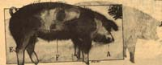
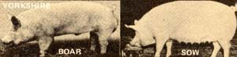
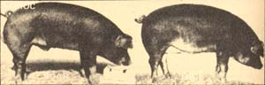
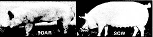
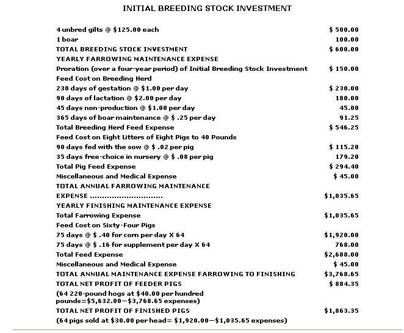

Pat Imig, her husband (Richard), and their three children (a girl, 11, and two boys, 3 and 1) live on an eight-acre mini-farm approximately 30 miles west of Lincoln, Nebraska. "This is the heart of agribiz country," says Pat, "and it's almost impossible out here to find information about the operation of a small farmstead. We had to learn the hard way how to make just a few hogs pay all the day-to-day expenses of our shirttail farming enterprise."
And learn they did! The pigs that the Imigs market each year bring in enough money-over and above their own costs-to support a cow, two ponies, two to three sheep, 14 geese, 30 ducks, 30 chickens, a big garden, a bed of rhubarb, some mulberry trees, and a cherry, peach, apple, and pear orchard.
"Except for a few staples-coffee, flour, sugar, etc-our little farm feeds us every bite we eat," Pat says. "We butcher a hog and a calf each year, sat a lot of geese, ducks, and chickens, have all the milk and eggs we want, and make good use of the garden and orchard. We even have a few eggs and some holiday geese left over to sell ... and that miscellaneous cash income goes a long way toward paying for the few staples we buy from town."
To put it another way, the Imigs have all the same expenses-a mortgage, taxes, fuel, electricity-to cover with Richard's wages as a welder that they'd have if they still lived in town. All the expenses, that is, except food. And thanks to the hog operation they run, their tiny farm keeps the Imig refrigerator, freezer, and panse try filled with good things to sat ... at no out-of-pocket expense at all.
"And besides that," says Pat, "we also get to enjoy the luxury of living in the country!"
Income! Income to provide adequate "store-bought" feed for our livestock during the winter (when our pasture isn't good enough to carry them) so that we wouldn't have to sell our brood stock. Enough income directly from our eight-acre mini-farm to cover all its upkeep, maintenance, and other purely agricultural expenses. Enough cash income, in short, to make the little spread entirely self-perpetuating (over and above the rent or mortgage, taxes, fuel, etc., that my husband's wages as a welder would have to cover anyway if we'd stayed in town) ... and , if possible, leave a "profit" in our pockets of virtually every bite of meat, milk, eggs, vegetables, fruit, and other food our five-member family could eat. That's the kind of income we hoped our tiny "estate" could provide for us.
In 1973-when my husband, Richard (a former farm boy), and I moved to our little homestead in southeastern Nebraska-we were determined to make the small spread "self-sufficient". That is, we expected it to both pay all the bills for its day-to-day operation (we couldn't afford to support a "hobby" farm) ... plus feed our three children and ourselves ... plus buy us the luxury of living far from the crime, pollution, and crowds of a city.
That, as we soon learned, was easier said than done. Within six short months we knew that we'd either have to come up with a regular cash crop of some kind-and pronto!-or kiss our dream of living in the country goodbye.
Now, three years later, we're still "gettin' by" out here on our eight acres thanks to one of the most traditional of all small-spread "mortgage lifters": the prolific, fast-growing, and efficient farmstead hog.
Unfortunately, none of today's agricultural "authorities" seem able to believe that anyone would want to do what we're now doing (profitably raise and market a homestead-size herd of hogs). Most of the literature currently available about pig farming assumes that its reader has six degrees from an "ag" college and enormous amounts of cash to invest in 1,000-head air-conditioned farrowing barns and completely automated feedlots. The "little guy" (us) has been largely forgotten ... and, when occasionally remembered, is talked down to in generalities that are, at best, vague and almost completely worthless.
We quickly discovered then, that if we intended to go into a small-scale hog operation, we'd have to teach ourselves most of what we needed to know to do it. So we did. And now-after three years of breeding, raising, and marketing a mini-herd of swine for profit -we've summarized our experiences into our own concise "A to Z Encyclopedia of Homestead Hog Production". Perhaps a review of our present knowledge will help you avoid some of the mistakes we've made during the past 36 months.
The accompanying table lists the seven most popular breeds of swine now raised here in the United States. Interestingly enough, though, most of the market hogs currently produced in this country are crossbreeds that, their herdsmen calculate, will achieve more efficient gains in weight more economically than purebreds.
A good cross will, at least in theory, combine the best qualities of several breeds. Our own small herd, for instance, is made up of four sows (each a Yorkshire-Hampshire-Duroc cross) and a purebred Duroc boar. Although you may decide that you prefer an entirely different cross (or that you want to raise only purebred swine), we like our particular combination for the following reasons: We feel that [1] the sows are, thanks to their Yorkshire blood, more prolific and better mothers than some others we've seen, [2] the cross contains just enough "Hamp" to make their pigs satisfyingly chunky, and [3] the bit of Duroc in the sows plus the 100% Duroc in the boar produces litters that are both feed-efficient and quite docile.
We maintain a breeding herd of four sows and one boar and farrow (deliver) two litters of pigs-one in the spring and the second in the fall-per sow per year. We pay very strict attention to our hogs and provide them with the best living conditions we can afford. We do not believe in sacrificing good care for the sake of a few extra dollars' profit.
1. A gilt (young female hog) will first come into heat at approximately six months of age. Thereafter, unless bred, her heat cycle will regularly span a period of about 21 days.
2. Young gilts generally have a better lifetime litter production record if they're not bred until they come into their third heat (first breeding, in other words, should not take place until a gilt is approximately eight months old). It's unlikely that a gift's initial litter (even when the animal is first bred at the age of eight, rather than six, months) will be as large as her second and following litters. Still, her chances of safely farrowing a medium to large litter of healthy pigs is much greater at the more advanced age. You're wise to wait until a gilts third heat before allowing your boar to breed her for the first time.
3. It's easy to tell when either a gilt or sow is in heat (her vulva will redden and swell and she'll become unusually restless). The acceptance period in gilts will last about 24 to 36 hours and will span a period of from 36 to 48 hours in sows.
4. Never use a large boar to service a young gilt. His weight during breeding can cause her serious and permanent back damage.
5. We use "companion breeding" whenever possible to keep later litter deaths to a minimum. The size of a litter can vary a great deal from sow to sow and from farrowing to farrowing.
Baby pigs develop a pecking order very quickly and the smaller piglets in a big litter can be squeezed out and will soon die if there's not enough good teats to go around. If two or more gilts or sows are bred to farrow at the same time, however, the "extra" pigs from an oversized litter can be transferred to a mother with fewer babies. If this is done within 72 hours of birth, neither sow will be the wiser and you'll stand a good chance of successfully raising a baby or two that might otherwise have been crowded out.
6. Introduce the boar into your breeding herd ten days to two weeks before the first female comes into her third heat. Leave him with the gilts through the next complete heat cycle (21 days) to ensure that he successfully breeds all the females.
7. A well-cared-for sow can produce strong, healthy, and large litters for four or more years.
1. A sow's gestation period is 112 to 115 days. Pay close attention to breeding dates and maintain accurate records for each of your mothers. Don't get caught by surprise litters. Moving a nested or farrowed sow can be both difficult and dangerous.
1. Worm each sow and spray her for lice two weeks prior to her farrowing. (Commercial worm medicines and lice sprays are available from feed dealers.) Vaccinate each mother for erysipelas (see COMMON HEALTH PROBLEMS).
2. A puffy vulva and the accumulation of thick, yellow fluid in the teats are good signs that a sow is approaching delivery (look for these signals to become noticeable about one week prior to farrowing).
3. Wash each sow with a mild detergent and warm water and remove any plugs of dirt that she may have on the ends of her teats immediately before you pen the animal for delivery of her litter.
4. The sow should be penned from one week to three days before she farrows so that shell have sufficient time to adjust to her new surroundings and settle down before the delivery.
1. The big, automated "pig factories" fasten their farrowing sows in "crates" that are so small the mothers can't even turn around in them. This causes the animals a great deal of nervous stress. As a result, the sows-unless watched constantly-tend to lose too many pigs when farrowed under such conditions.
2. On the other hand, it can be dangerous-to the sows, their pigs, and to you-to allow your mothers to farrow at random in a common lot. Under such conditions, a boar and other sows (even the delivering mother) have been known to eat the helpless piglets and-if crowded-the other hogs will sometimes attack the farrowing sow. Even if this does not happen, the delivering mother and her babies probably will be unnecessarily exposed to the elements and to various forms of infection. Also, if complications develop during a farrowing in an open lot, you may well have a great deal of difficulty in "cornering" the delivering sow so that you can assist her. And you may find yourself exposed to more risk than you'd bargained for-from both the farrowing mother and the other hogs in the lot-during that assistance. Trying to allow a domesticated sow to farrow "naturally " in a barnyard (which is not at all like the deep forest that wild hogs live in), then, can be just as misguided in our opinion as allowing the animal to deliver in a pig factory crate .
3. We shut our sows up for delivery in a pen (see accompanying drawings) that is large enough to allow the mother some freedom of movement but small enough to make her easy to watch, handle, and tend. Such a pen causes the animal very little nervous stress. Still, we never confine our mothers in even these enclosures without due consideration of their need for both exercise and cleanliness. We maintain a very conscientious schedule of two exercise periods a day (which consists merely of letting the sow walk around outside for 10 or 15 minutes and eat her mixed feed while we clean her pen) for each confined sow and we keep fresh bedding in all farrowing pens at all times so that we won't unnecessarily expose our mothers and their litters to infection.
4. Each farrowing sow should be given sufficient bedding to allow her to obey her nesting instinct. Approximately two inches of wheat straw is usually enough to cover even a concrete floor. Too much increases the danger of the mother lying on her pigs, while too little can expose the babies to a cold floor, chilling, stress, and (quite possibly) disease and death.
1. It is a MYTH that a sow with suckling pigs is like a bitch dog with a litter of pups. The TRUTH is that a sow is a domesticated animal BUT that she can in no way be considered a pet. A mother hog almost surely outweighs you, she can bite and tear you with unbelievable speed when aroused, and she has a very strong and protective material instinct. ALWAYS treat her with the respect she deserves and NEVER try to handle her newborn pigs unless you're absolutely certain that you have the upper hand in the situation.
2. Delivery is different for each mother. Some sows go into a trance during labor while others jump up after every pig is born. Watch your farrowing sow closely. If she becomes restless, hang a heat lamp above her-out of reach-and put the newborn pigs in their hover under another heat lamp (where they'll be both warm and safe from trampling).
3. The actual delivery time will vary with each sow, but do watch closely for prolonged delays between the births of the pigs. As much as 30 minutes between deliveries can be reason for concern. If a pig is left in the birth canal too long, the result can be the death of that particular baby and of the remaining unborn portion of the litter. Be prepared, if necessary, to assist the sow by pulling a pig.
4. If pulling does become unavoidable, use a medical detergent to wash your hand and arm to the elbow before entering the vagina. (A strong household detergent can cause as much danger of infection as the use of no detergent at all.) Then tuck the thumb under the fingers and insert the washed hand slowly, palm down.
5. A sow's birth system, from the vaginal opening forward, is shaped like a "Y" The animal's uterus is V-shaped and pigs are delivered from either the left or the right side into the common birth canal. (Don't worry. It's extremely unlikely that you could accidentally reach beyond the canal into either uterus.)
6. The pigs are delivered either head first or hind legs first. Each is born in a sack, which can make pulling one of the babies a rather slippery undertaking. If the pig's head is presented first, grasp the back of its neck and pull firmly and slowly. If you find the hind legs presented, lock them between the index, middle, and ring finger and-again-pull firmly and slowly, CAUTION: Don't overreact, if you do find it necessary to pull a pig. Give the sow sufficient time to deliver the next baby normally before you convince yourself that it must be pulled too.
7. It isn't necessary to cut the umbilical cord of a freshly born pig. The cord has a naturally weak spot and will come apart with a tug or two. Many vets recommend treating the navel of the new baby with tamed iodine as a precaution against infection.
8. The afterbirth may be expelled both during and following delivery. Some herdsmen-feeling that it enriches the milk-allow their sows to eat it (left to herself, the sow will invariably do so). Others, as a matter of personal choice, remove the afterbirth.
9. As a general rule of thumb, a sow will stay down from four to six hours after farrowing. She may then be fed her regular rations at the next scheduled feeding and increased to full lactation rations over a three- or four-day period. The mother should be fed twice a day during lactation (see FEEDS AND FEEDING).
10. Keep fresh, clean water available to the mother at all times. A first-litter gilt will consume four to five gallons of water a day and a sow will drink from five to six gallons.
11. A lactating sow can produce six to eight pounds of milk per day. Be alert for signs of mastitis, metritis, and agalactia (see COMMON HEALTH PROBLEMS).
1. A baby pig enters the world with a strong will to live and a natural instinct to find food and warmth. But what nature gave him in intelligence, she took back in resistance. Baby pigs have very poor thermostats and a high susceptibility to stress. I can't over-emphasize the need for cleanliness and warmth during the first two weeks of a piglet's life. Like all babies, he can become suddenly sick without any advance warning. We watch our newborn litters very carefully.
2. A pig usually weighs between three and three and a half pounds at birth. Wipe the membrane from his mouth and dry him well with a clean cloth (this will keep the risk of chilling to a minimum). Then put the baby under the hover and maintain its temperature at 90 to 95 degrees Fahrenheit to assist him in making the transition from the sow's body (which, remember, kept him at a temperature of 102 to 103 degrees).
3. Once the whole litter is born, dried off, and warmed, be certain that all the baby pigs receive a share of the sow's first milk. This will ensure a transfer of antibodies from the mother-via colostrum-to her offspring.
4. Newborn pigs, although pinch-butted and wobbly, are aggressive eaters. So aggressive that we think it's a good idea to clip the tips from their needle or "eye" teeth at birth to keep them from injuring their mother. The sharp teeth are easily recognized because of their length and should be cut-again, take only the very tips-with a sharp, clean pair of wire cutters or nail clippers.
5. Baby pigs are born anemic. It's the curse of the animal and it can be corrected with an injection of 2 cc of a commercial iron product. Some large herdsmen also douse their 14-day-old pigs with an oral iron medication and feel it gives the growing animals an extra boost.
6. Place a filled baby pig waterer in each hover when the piglets are one week old and, three days later, give them a creep feeder filled with pig starter.
7. Castrate all the boars in a litter (except for any that you intend to save for breeding stock) when they're two weeks old, and treat the wounds with tamed iodine.
8. Six-week-old pigs should be vaccinated for erysipelas (see COMMON HEALTH PROBLEMS).
9. We never ring our pigs ... since they never seem to root a great deal.
10. There are a good many arguments about the subject of weaning baby pigs. Some breeders take a litter away from its mother when the babies are only three to five weeks old. Others-less anxious to spend so much money on commercial feeds-leave the pigs with a sow until they're six to seven weeks old. A sow reaches her peak milk production 21 days after farrowing and, at that time, begins a natural 21-day decline back to zero milk output. Forced lactation after the 42 days tends to drag her down and weaken her health.
11. At the time that pigs are weaned, they should be transferred into a nursery that allows a minimum of four square feet per animal. From the day he's weaned (at approximately 20 pounds) until he reaches a weight of 40 pounds, a shoat (young hog) is a very efficient converter of food into meat. During this period he can gain as much as one pound for every two pounds of feed he eats ... but, once again, this rapid growth coupled with the recent shock of weaning can put the animal in a highly stressed condition. Careful attention should be given to the sanitation and proper ventilation of such shoats to avoid compounding the natural stress of this portion of their lives.
12. Pigs thrown together in a large group quickly develop a social pecking order. If litters of widely differing ages are herded together or if access to feed and water is limited, you may find it necessary to transfer the smaller animals in your nursery to a second nursery (otherwise they'll be crowded out at feeding time and their growth stunted). Keep freechoice feed and clean, fresh water available to every member of the herd at all times.
1. A boar is responsible for 50% of the net worth of your entire breeding stock. Individually, he passes the greatest percentage of strengths and weaknesses to the offspring and-therefore-should be selected with optimum breed characteristics uppermost in your mind. (If the boar you're considering doesn't exhibit good-even great!-conformation, don't buy him!)
2. NEVER buy a boar that is too small or too large for the sows he will breed. NEVER allow a boar to breed before he's eight months old. And ALWAYS let a new boar have a 30-day period of isolation in which to recover from the stress of moving from his previous home.
3. Stress, as I keep emphasizing, can seriously affect a hog's performance. In the case of a boar, seasonal temperature extremes can decrease his fertility. So can internal and external parasites. His sperm may not live long enough to impregnate a sow if either animal is running a fever at the time that breeding takes place. Try, in short, to eliminate any and every condition that might adversely affect your boar. A little pampering can pay large dividends.
4. On the other hand, always bear in mind that-once he reaches breeder age-a boar's breeding ability will never increase. If yours throws small litters his first year, hell always throw small litters. (A good general measurement of a boar's ability can be made in a single farrowing season. If all his litters are small, it's a good bet that the boar is at fault. If-say-two out of four litters are small and two are large, however, it may well be half your sows that are at fault. And if all the litters are big ones ... hooray!)
1. Hogs will pasture but they cannot be raised entirely on the grasses, clovers, and other such forage that will fatten cattle, sheep, goats, and horses. Although swine enjoy nibbling at and rooting up such plants, the animals are basically grain eaters.
2. While the sophisticated feeding formulas used in "pig factories" aren't really practical for the small homestead herd, the application of a few simple rules of thumb in this area can make your hog operation both more efficient and more profitable. (In short, a mixture of corn, oats, and commercial supplement is actually all you need to feed either your boar or open, gestating, and lactating sows.)
3. Although it isn't necessary to grind the corn you give your hogs, the animals will make more efficient use of the grain if you feed it to them cracked instead of whole.
4. Oats are a good feed for swine but should not make up more than 50% of their basic ration.
5. While an open or gestating sow can be kept alive on just three pounds of feed per day, most vets recommend a daily five pounds of the grain-supplement mixture for open and gestating gilts and ten pounds a day for lactating sows. (In a five-pound feeding, the recommended ratio is three pounds of cracked corn to one and a half pounds of oats to one-half pound of 16% mineral supplement.) Work up to the extra rations given during lactation by gradually increasing a sow's feeding over a three-day period. Then cut the sow back to five pounds of feed on the first day that you wean her pigs.
6. Five pounds of feed (the same amount given to an open or gestating gilt) is about the right amount of the grain-supplement mix to offer a boar every day. Five pounds of the rations will keep him growing at his natural rate ... but isn't enough of the mix to make him fat and lazy. Overfeeding a boar can decrease his fertility.
7. Always offer commercially prepared pig starter on a free choice basis. At the time the creep-fed ration is first offered in the hover (when the pigs are 10 days old), the babies will only nose around in the feed, since they'll still have a greater preference for their mother's milk. Change the feed daily and gradually increase the amount you offer, as the pigs demand it.
8. NEVER change feeds at weaning time. The pigs will be going through enough stress anyway ... without the added burden of adjusting to another feed.
9. A young pig will have consumed approximately 40 pounds of feed by the time he reaches a weight of 40 pounds.
10. Finishing a 40-pound pig out to 220 pounds for market will cost you about three pounds of feed for each one pound of gain (or 540 pounds of grain and supplement for the 180-pound increase). Cracked corn and commercially prepared supplement alone (in a 3-pounds-corn-to-1-pound-supplement ratio) makes a satisfactory finishing ration. Or you can buy a commercially prepared complete feed that will produce the same results.
MARKETING
Since there are few demands for tri-crossed breeding stock, all the pigs we raise are sold as market stock in one of two stages of their development:
1. A pig is considered to be "feeder" sized when he reaches a weight of 40 pounds. It's possible, at this stage of his development, to sell the animal privately in a farm-to-farm transaction ... or he can be sold through a livestock auction barn. In either case, the feeder pig is sold on a "per head" basis.
2. At 220 pounds, a hog is considered to have reached "finished" or "market" weight. He can now be sold directly to a slaughterhouse or through a livestock auction barn to the highest bidder. Finished hogs are always sold on a "per hundred weight" basis.
The method of farrowing and caring for baby pigs that I describe in the accompanying article is by no means the only one that can be used. For overall performance on the small farmstead, however, we feel that the techniques we've evolved over the past three years are hard to beat.
Caging a sow in a farrowing crate the way the "pig factories" do (so that the animal can only lie, sit, or stand in the same spot for six weeks) may be "necessary" for such automated operations ... but we find it both unkind and out of place on our small farm.
Richard and I have tried going to the opposite extreme and allowing our sows to farrow in an open pasture. The pigs born under such conditions did not do well at all. Though they were delivered in the spring, the nights were cool enough to chill the babies and subject them to unnecessary stress. Furthermore, since the outdoor litters didn't have access to the warmth and creep feeders that we could provide only in an indoor hover, the pasture-farrowed babies were completely dependent on their mothers for support during the first few weeks of their lives. This both put a greater strain on the outdoor sows and retarded the weight gains of their litters.
Sanitation was also a tremendous problem with the pigs reared in the pasture. The dirt which accumulated on the sows' teats
between nursings opened the door to any number of infections in the young pigs (we found that the same problem existed when we tried farrowing confined sows inside on an earthen floor).
Another "great" idea that we want nothing else to do with is farrowing two sows in a single pen. The pigs favored the mother with the most milk and mobbed her during nursing periods. The resulting inactivity caused the second sow to lose , rather than increase, her capacity to produce milk. (We wound up feeding the double-litter a powdered milk substitute, which was both expensive and unsatisfactory.)
We've also tried turning our mothers and their pigs communally out to pasture once the babies have passed through their critical first two weeks of life. Suddenly being dumped into this social situation only confused both the sows and the pigs. The smaller babies in each litter lost ground very rapidly and, in some cases, died from the extra stress ... while even the stronger pigs were set back as much as a week making the transition.
We now farrow our pigs in pens as described in the article-with controlled sanitation, heat, feed, water, and exercise-because bitter experience has shown us that such a system of delivering and rearing the animals consistently produces superior-and profitable-results.
Although our hogs are much healthier than my preoccupation with "what can go wrong" might make it seem ... I would be dishonest if I pretended that we never have a sick pig. We do. I would also be dishonest if I pretended that we're never forced to call in the vet to treat our hogs. We sometimes are.
Still, I think I should point out that the methods we now use in the management of our mini-herd of swine tends to keep our health problems down to an irreducible minimum. And, when illness does strike the animals, we find that we're able to treat 95% of the ailments ourselves with commercially available antibiotics.
Remember, then, that most of the small herdsman's hog health problems are caused by the animals' natural responses to the stress caused by mismanagement, farrowing, and sudden changes in the weather. Guard against these causes of stress, and you'll be able to avoid much of the sickness that might otherwise plague your pigs.
And, the first time you do run up against an illness in your herd, perhaps a quick glance over the following chart will help you identify the ailment and prescribe an appropriate treatment. (While not exhaustive, the chart does briefly run down the afflictions that are most likely to strike your hogs.) Remember too: It's always a good idea to consult your veterinarian - immediately! - for help in any situation that you can't properly identify or handle.
Pat Imigs Straight Talk on COST ANALYSIS
The following figures are based on a conservative three-year trend in prices on both the Kansas City Grain Market and the Omaha Livestock Market. They do not contain any information on local market fluctuations and are based on the assumption that all variables remain constant from gestation through final sale.
PAT IMIGS STRAIGHT TALK IN MARKETING
It isn't impossible for a small farmer to finish out his own feeder pigs to market size ... but the economics of the necessary five-to-six-month investment make it a little impractical. The gain ratio I quoted in the accompanying article (one pound of gain for every three pounds of grain/supplement fed) is an ideal calculated for confined animals. And the average small farm can't afford to make the investment in sophisticated sanitation facilities that such confinement requires.
Richard and I tried finishing out one season's farrowing ... and when we weren't struggling to keep infection down, we were battling to find the money we needed for the purchase of the animals' feed. For obvious reasons, we don't recommend finishing hogs out to 220 pounds on a small farm.
The folks who study such things calculate the statistical break-even point in a farrowing operation to be the sixth pig per litter that is raised to 40 pounds. They also figure, on a national average, that a fraction over seven pigs per litter are raised to that magical 40-pound weight.
The odds, then, are just barely in your favor when you go into the hog business. If you expect to make any real money with the enterprise, you're going to have to do it with good management. And you're going to have to enter hog farming with your eyes open and with a commitment to riding out market peaks and valleys with consistent production. (There are too many variables in the hog business for it ever to be a quick way to make a fortune.)
On the other hand, the situation is not necessarily as bleak as those "average" statistics paint it. For today, those figures are largely based on the big commercial "pig factories" . . . where the animals are closely confined, conception rates are low, and overhead is high.
To put it another way, we've found that-by raising just eight litters a year (two litters each from only four sows)-we're already way ahead of those "average" statistics quoted above. Since our pigs don't have to fight the stress of automated confinement, both their conception rate and their live-pig-per-litter average is higher than that of the breeding stock in the pig factories.
As a result, we operate with a much lower mortality rate among our animals and with a much higher profit margin. And, thanks to that profit, our little eight-acre farm's operation is able to pay its own way throughout the year ... buy our family the freedom of living in the country . . . and put almost every bite on the table (free!) that the five of us can eat.
|
 Left: BOAR, Right: GILT |
 Left: BOAR, Right: GILT |
 |
|
 |
|
|
|
|
|
|
|
 |
|
|